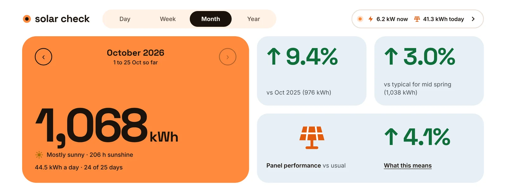
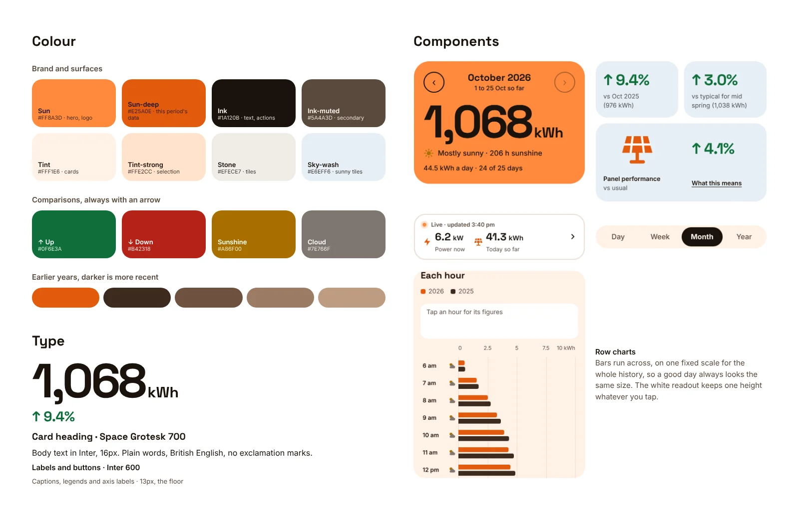
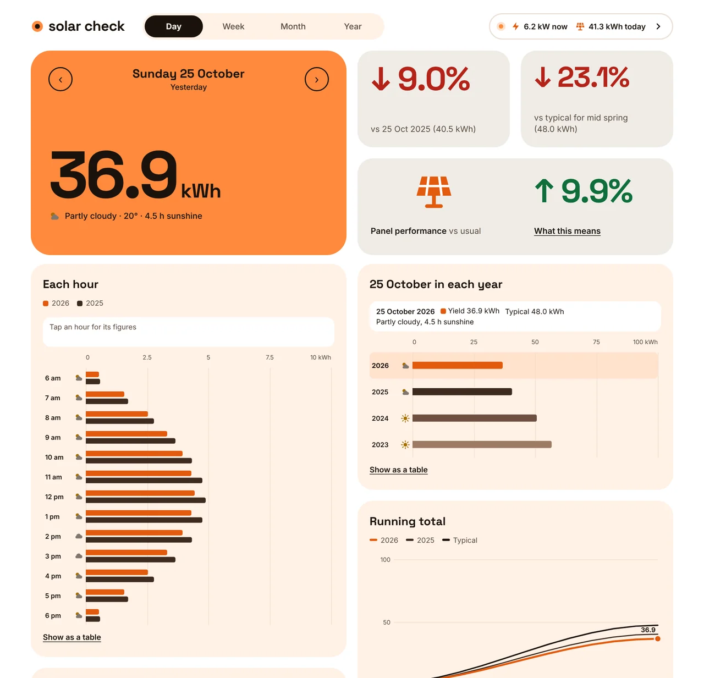
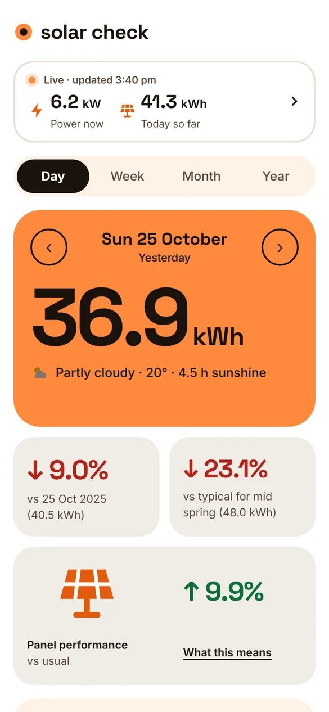
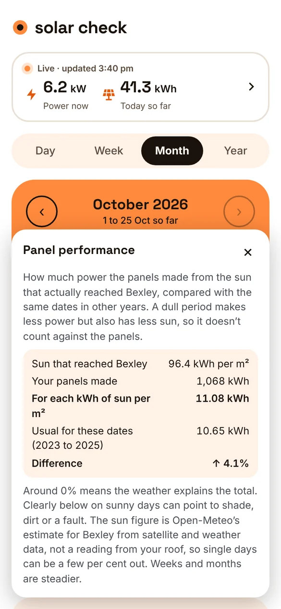
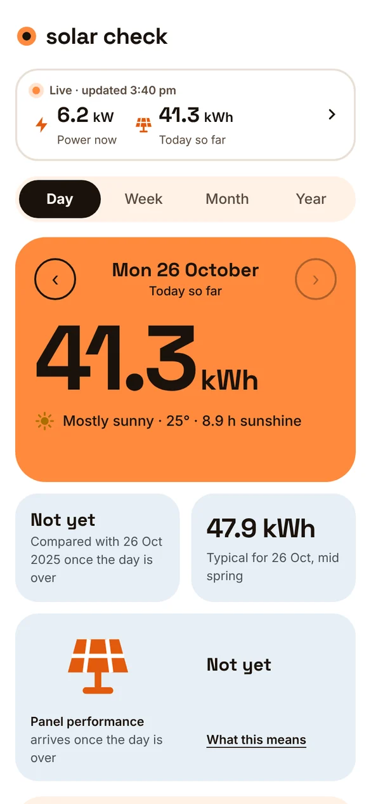
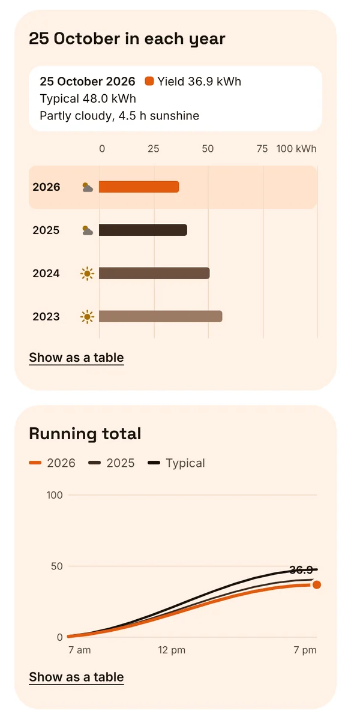

An app that tells me how my rooftop solar is really doing, by comparing every hour, day, week, month and year with the same dates in other years and allowing for the weather. As with Recipe Book, it was built in close collaboration with AI, in short loops of brief, design, build and test.
Role Designer, product owner and QA
Tools Claude, Claude Code
Built with React, GitHub, Vercel, Supabase, Sungrow iSolarCloud API, Open-Meteo
We put solar panels on the roof at the end of 2025, just as a new development started going up to the north of us. I wanted to know two things: whether the panels were doing as well as they should, and whether the new development would start to shade them once it reached full height.
The manufacturer's app shows what the panels made, but not whether that's good. A dull October will always look worse than a sunny one, and it can't put this October next to last October on the same dates. Without that, there's no way to tell a poor month from a cloudy one, or a cloudy one from a shading problem.
It was also a second test of working with AI. Recipe Book was about capturing and presenting messy content. This one was about data: being honest with numbers, and building on someone else's API with real limits.
From a script to a product
It started as a conversation with Claude. Before the development got any higher, I wanted a baseline for the panels on clear days. We worked out how much they should make for the height of the sun, and how far below that counts as a problem. Mid-July, with the sun at its lowest, turned out to be the window where any new shading would show first.
That became a Python script that signed in to Sungrow's API and drew a dashboard on my laptop. It worked, but only on my laptop, only when I remembered to run it. So I wrote a build brief to turn it into a hosted app, with the script as the reference: Claude Code ported its tested behaviour rather than guessing at an undocumented API again.
Was that a bad month, or just a cloudy one?
The question the manufacturer’s app couldn’t answer
Defining a fair comparison
Before any screens, I wrote the rules every number has to follow. They're the heart of the product, and having them in writing meant every chart and figure agreed with every other.
Same dates every year. A month in progress is compared with the same dates in other years, never the whole month.
Stop at yesterday. Today is always labelled “so far” and isn’t compared until the day is over.
Show what's missing. Days without data are counted and shown, never treated as zero.
Typical for the time of year. An average of the weeks either side across other years, in plain words: “vs typical for mid spring”.
No ranking of years. I tried it and it wasn't much use, so it went.

One big figure, then how it compares. Screens show sample data
A design system first
I gave Claude some stimulus, essentially a simple, modern and fun feel, using orange as the primary colour, and had it mock up a range of directions. I chose “Sun block”: a solid orange block for the headline figure, soft orange-tinted cards around it, and Space Grotesk for the numbers. It was written up as a design system with tokens before the dashboard was built, and the app's theme reads from those tokens.

Colour, type and components from the Sun block design system
Rapid prototyping
Using the working app every day, with real data, shaped the detail and behaviour over four review rounds:
Bars run across. Rows down the page work on a phone and leave room for a weather icon on each day.
One scale for all time. Every chart's scale is fixed across the whole history, so a good day always looks the same size.
Nothing jumps. The orange block and the readout box keep one height whatever you tap, so the page never shifts under your thumb.
Colour that means something. Up and down always carry an arrow and a sign, and the comparison tiles turn sky blue for sunny periods.

Bars run across, with the weather for each hour. The day view on desktop
Weather explains, never excuses
Comparing with last year still doesn't answer the real question, because last October might have been sunnier. So the app brings in the weather for Bexley every night: sunshine, cloud, rain and the solar radiation that actually reached the ground.
That made a third headline figure possible. Panel performance divides what the panels made by the sun that reached them, and compares that with the same dates in other years. Around 0% means the weather explains the total. Clearly below on sunny days points to shade, dirt or a fault, which is exactly what I want to catch when the development next door is finished.
A figure like that needs to earn trust, so “What this means” shows the working, with the sums and where the sun figure comes from, including its limits.


A cloudy day that the panels handled well, and the working behind it
Building on a real API
Recipe Book's hardest problems were in the design. Here, some of the hardest were in the plumbing, and they shaped decisions I wouldn't otherwise have had to make.
Slow answers. The first connection check timed out. Moving the server to Sydney and checking in small steps fixed it.
A request limit. Fetching the full history hit Sungrow's hourly limit, so the app now stops cleanly and carries on later from where it stopped.
Public, without the cost. Anyone can look, so visitors share one live copy of today's figures, refreshed at most every five minutes, and can never use up my limit.
Honest when things fail. If Sungrow doesn't answer, or you're offline, the app says so and shows the last figures it had, with the time.

Today stays “so far”: comparisons wait until the day is over
How it's built
The stack is the same as Recipe Book's, which meant I could reuse what I'd learned, and even the same database projects, with Solar Check's tables kept apart from the recipes.
GitHub holds the code. Each stage is built on its own branch and merged once I've tested it.
Vercel hosts the app and runs the nightly sync. Every branch gets its own preview address to test on my phone.
Supabase stores the history and weather. Row level security means anyone can read the history but only my account can change anything, and settings stay private.
Sungrow's API keys live only on the server, never in the browser or the code.
Six stages, one parked
As with Recipe Book, the build brief ran in stages, each finished, deployed and tested by me before the next started. I checked figures against the manufacturer's app at each step.
Foundations and sign-in.
Connecting to Sungrow. The full history, and a sync every night.
The dashboard. Day, week, month and year, and today's live figures.
Weather and panel performance.
Shading watch, parked. With the development not yet at full height and the data already being kept, I decided it could wait.
Public and polished. Read only for visitors, installable on a phone, and clear about loading and offline.
Parking a stage was a design decision too. Everything it needs is being stored, so it can be built when there's something to find.

The same date in every year, with the weather for each
What I learned
Write the rules before the screens. With data, the design starts with what a fair number is. Getting that in writing kept every view consistent.
Real data pushes back. API limits and timeouts weren't edge cases, they shaped how the app works for visitors.
Use it, then design it. Most of the best refinements came from living with the app on my phone, not from the first mock-ups.
Knowing when to stop is part of the job. AI makes building cheap and quick, which makes deciding what not to build matter more. Keeping things simple and clear still matters, so they stay understandable and useful.